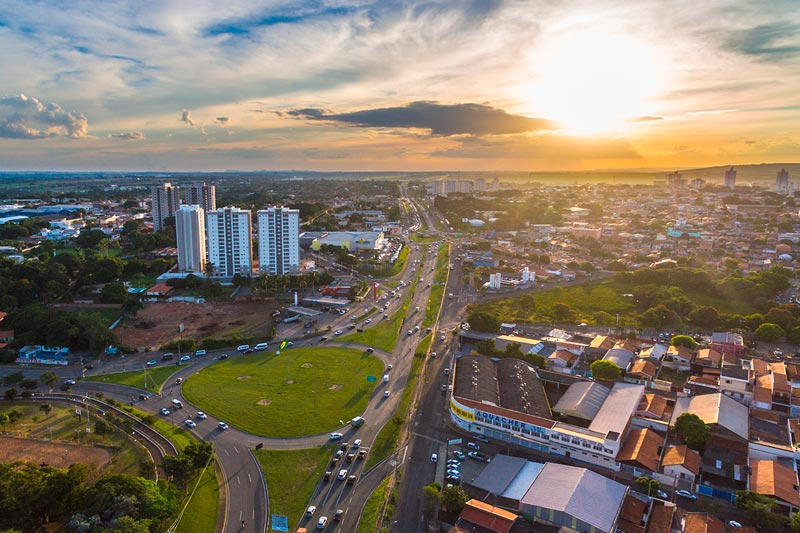

Como chegar em Limeira: Dicas de transporte.

Chegar a Limeira é fácil, rápido e confortável!
Conectada às principais cidades do estado de São Paulo, Limeira conta com diversas opções de transporte que tornam a viagem tranquila e prática — seja de ônibus ou por carona. A cidade é atendida por várias empresas rodoviárias que oferecem partidas frequentes a partir de polos importantes como São Paulo, Campinas, Americana, Piracicaba e muito mais. Os ônibus são modernos e confortáveis, garantindo uma viagem agradável. Além disso, a rodoviária de Limeira está estrategicamente localizada, facilitando o acesso aos principais pontos turísticos da cidade. Tudo pensado para você aproveitar ao máximo sua visita!
Distância entre o Limeira e as principais cidades brasileiras
| Entre o São Paulo e Limeira: 135 km | Entre o Rio de Janeiro e Limeira: 432 km |
| Entre o Brasília e Limeira: 755 km Entre | Entre o Fortaleza e Limeira: 2305 km |
| Entre o Salvador e Limeira: 1421 km | Entre o Belo Horizonte e Limeira: 465 km |
| Entre o Manaus e Limeira: 2561 km | Entre o Curitiba e Limeira: 371 km |
| Entre o Belém e Limeira: 2353 km Entre | Entre o Porto Alegre e Limeira: 915 km |
| Entre o Guarulhos e Limeira: 134 km | Entre o Campinas e Limeira: 52 km |
| Entre o São Luís e Limeira: 2255 km | Entre o São Gonçalo e Limeira: 447 km |